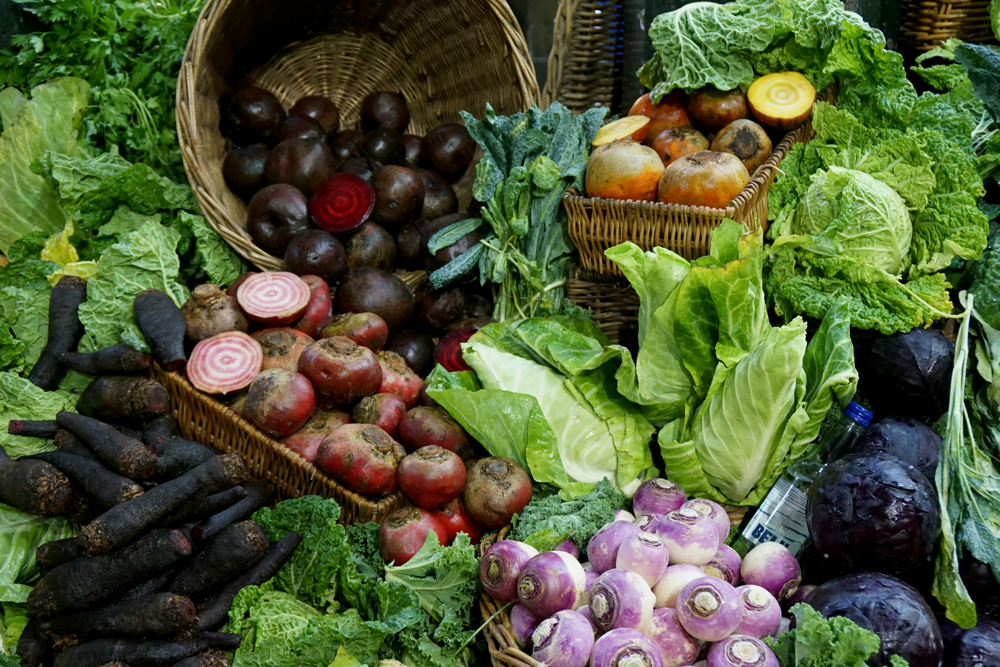

Publicado el 15 de agosto, 2025
Consumir productos orgánicos tiene múltiples beneficios para la salud, el medio ambiente y la economía local. Aquí te contamos los principales:
1. Menos químicos: Los alimentos orgánicos se cultivan sin pesticidas ni fertilizantes sintéticos, lo que reduce la exposición a químicos nocivos.
2. Mayor valor nutricional: Estudios sugieren que algunos productos orgánicos pueden contener más antioxidantes y nutrientes que sus equivalentes convencionales.
3. Sabor más natural: Al no depender de productos químicos para acelerar el crecimiento, los alimentos orgánicos tienden a tener un sabor más auténtico y fresco.
4. Apoyo a la agricultura local: Comprar orgánico a menudo implica apoyar a pequeños productores y fomentar prácticas sostenibles en tu comunidad.
5. Beneficio ambiental: La agricultura orgánica ayuda a conservar la biodiversidad, reducir la contaminación del agua y mantener suelos más saludables.
Volver al Blog